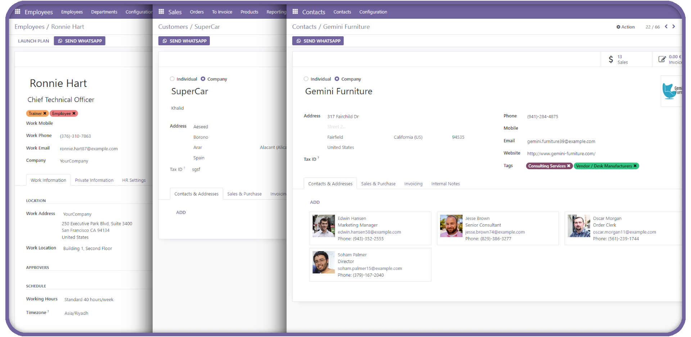
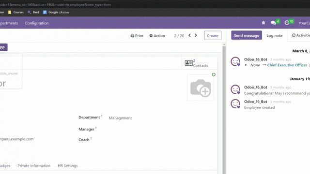

Whatsapp Sender, it's module to send whatsapp message in odoo, you can send a ready message or custom it before sending it.
You can send message in, Employees, Customers, and in Sales.

You can use a ready message you had made, or custom it before sending it.

I made this project to improve my skills in Odoo,
and I learned more about inheriting in Odoo, and I used Git more in this project I learned new commands.
I share some articles about Odoo in my LinkedIn profile. https://www.linkedin.com/in/abdullah-saeed-73811925b